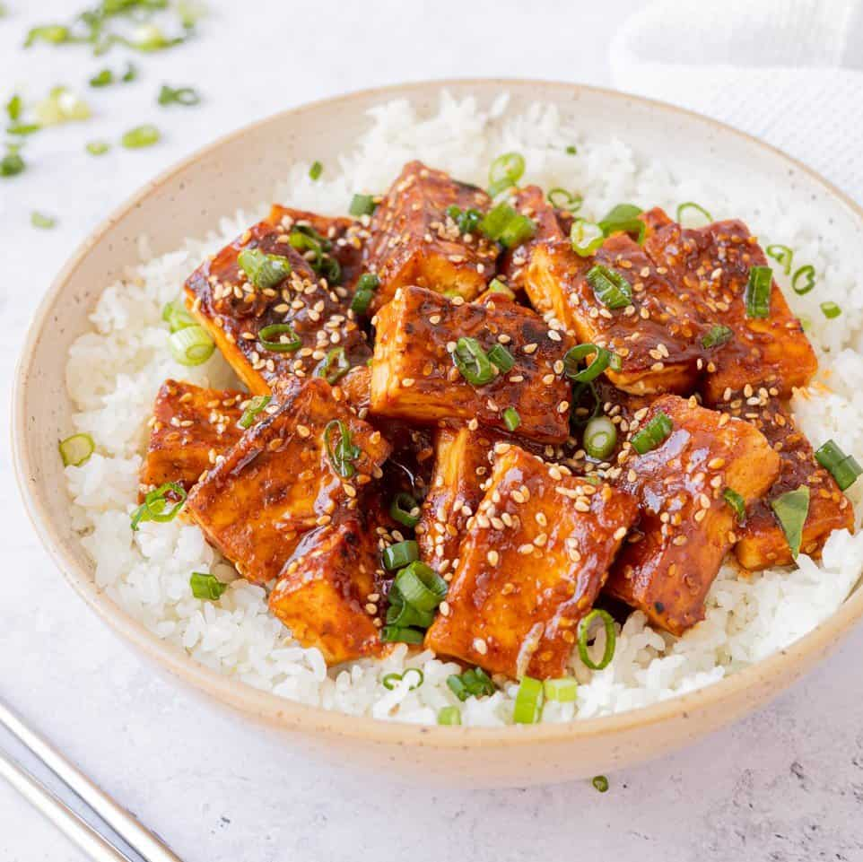

Gouchijiang Stir-fry

Ingredients
- 1 large sized onion
- 3 minced garlic cloves
- 100ml of cooking oil or butter
- 2 chicken breasts or 1 large firm block of tofu
- 1 large green pepper
- Optional: Red chili or Red Chili flakes for added spice
The Sauce
- 1 cup chicken broth
- 100ml Gouchijiang red chilli paste
- 100ml Ketchup
Instructions
- In a large pan heat oil on medium heat
- Add slivered onion and cook until browned
- Add garlic and cook for one minute
- Add gouchijiang paste and cook until fragrant
- While stirring add chicken broth and ketchup
- Mix in diced peppers and tofu cut into small equally sized cubes
- let simmer for 10 to 15 minutes or until the sauce reaches a thick consistency